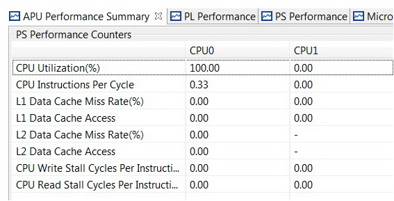

In the APU Performance Summary tab, metrics are displayed for each CPU. The same metrics are also visible as graphs in the PS Performance tab.

The following table lists the metrics that are displayed for each CPU.
Metric |
Description |
|---|---|
CPU Utilization |
shows the percentage of non-idling cycles |
CPU Instruction Per Cycle (IPC) |
estimates the number of executed instructions per cycle (IPC). |
L1 Data Cache Miss Rates |
shows the L1 data cache miss rate. |
L1 Data Cache Accesses |
shows the number of L1 data cache accesses. |
L2 Cache Accesses |
shows the number of data accesses to the shared and unified L2 cache. |
L2 Cache Miss Rates |
shows the data miss rate of the shared and unified L2 cache. |
CPU Write Stall Cycles Per Instruction |
estimates the number of stall cycles per instruction due to memory writes (write) |
CPU Read Stall Cycles Per Instruction |
estimates the number of stall cycles per instruction due to data cache refills (read) |